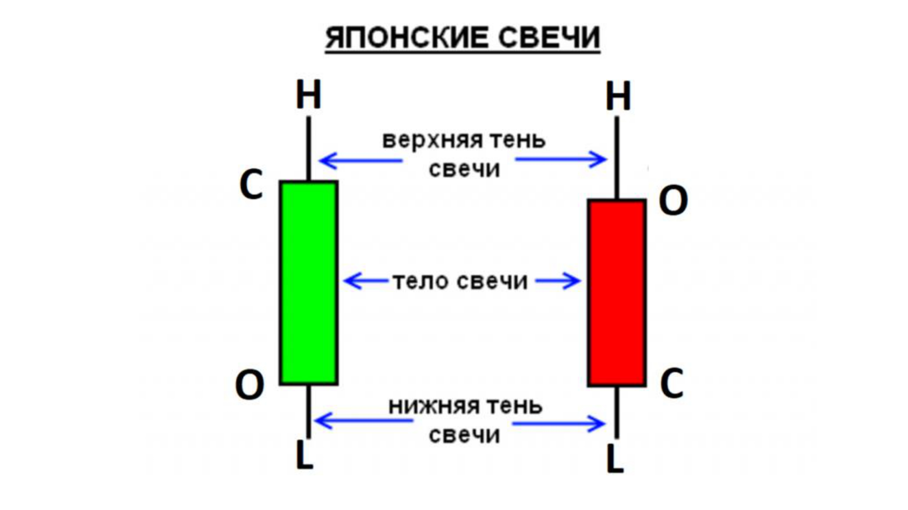
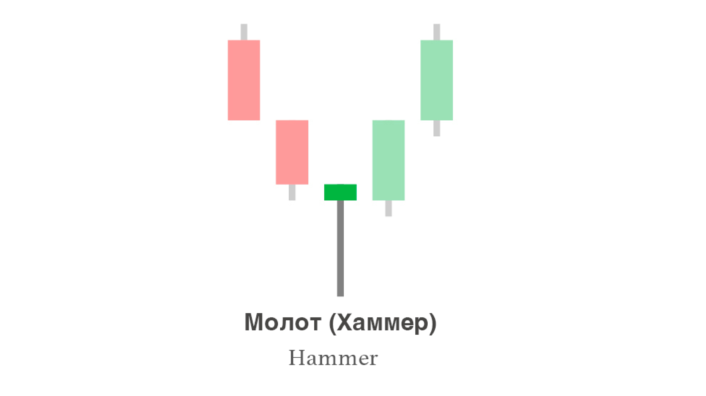
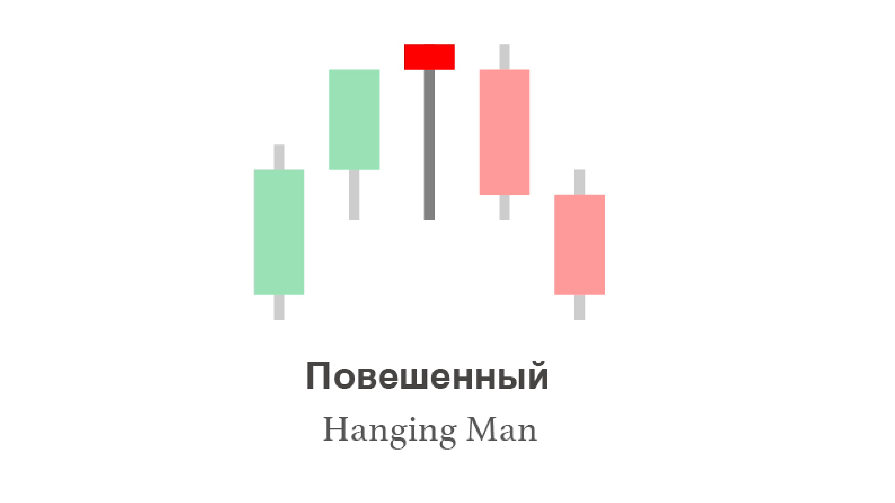
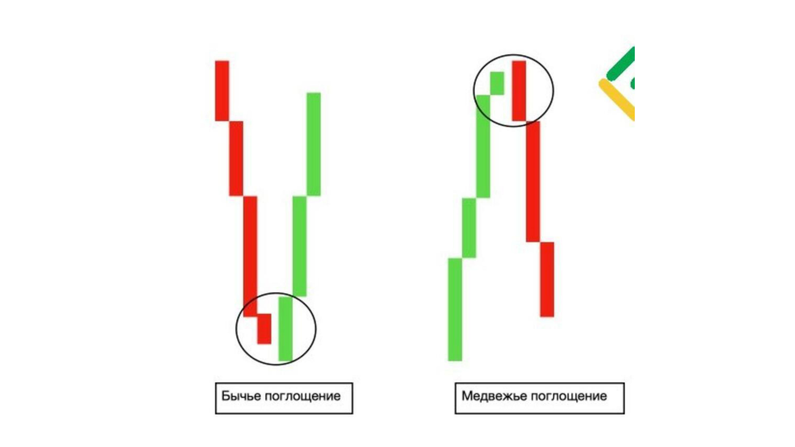
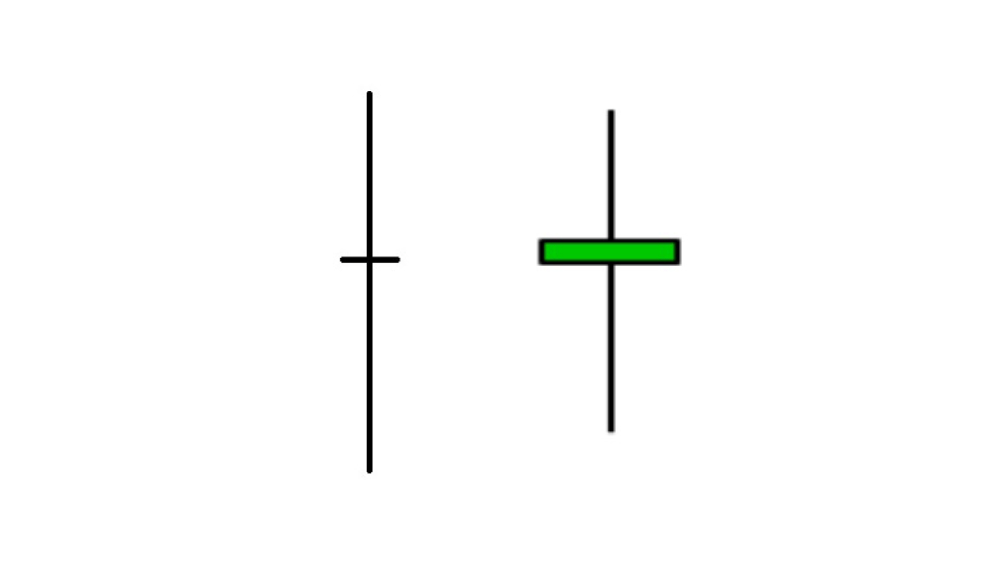
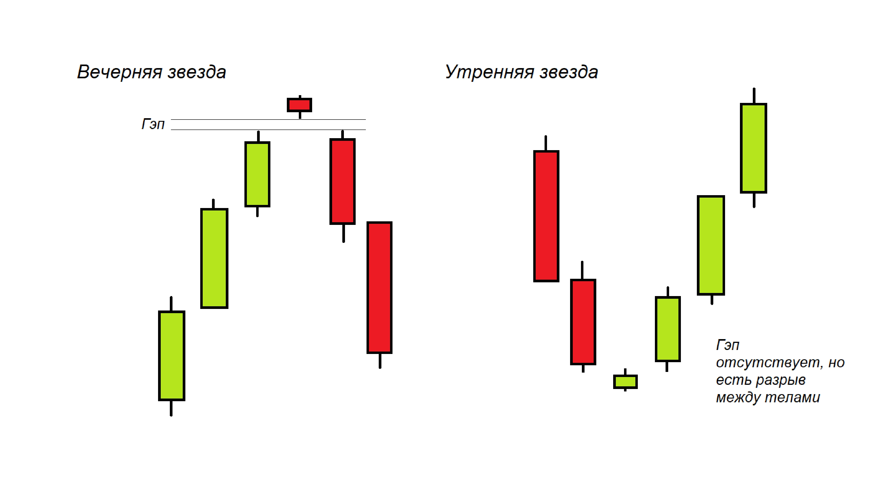

Что такое японская свеча
Японская свеча — это графический элемент, который показывает движение цены за определённый период времени. Одна свеча = один интервал (5 минут, 1 час, 1 день — зависит от таймфрейма, о котором поговорим в уроке 5).
Свеча состоит из двух частей: тела и теней (их ещё называют «фитилями»). Тело показывает, где открылась и закрылась цена. Тени — где цена была в моменте максимума и минимума.
Анатомия свечи
У каждой свечи есть 4 ключевые цены:
- Open (открытие) — цена, с которой начался период.
- Close (закрытие) — цена, которой закончился период.
- High (максимум) — самая высокая цена за период.
- Low (минимум) — самая низкая цена за период.
Тело свечи — это прямоугольник между Open и Close.
Верхняя тень — отрезок от максимума до верхней части тела.
Нижняя тень — отрезок от минимума до нижней части тела.

Бычья и медвежья свеча
Свечи бывают двух цветов:
- Бычья (зелёная) — Close выше Open. Цена выросла за период. Покупатели победили.
- Медвежья (красная) — Close ниже Open. Цена упала за период. Продавцы победили.
Что говорят размеры свечи
Размер тела и теней — важная информация:
- Длинное тело, короткие тени — сильное движение в одну сторону. Тренд уверенный.
- Маленькое тело, длинные тени — неопределённость. Борьба равная, возможен разворот.
- Длинная верхняя тень — покупатели пытались поднять цену, но продавцы отбили.
- Длинная нижняя тень — продавцы пытались уронить цену, но покупатели откупили.
- Доджи (почти без тела) — полное равновесие, часто сигнал разворота.
Базовые свечные паттерны
Паттерн — это комбинация 1–3 свечей, которая с высокой вероятностью указывает на дальнейшее движение. Разберём самые популярные:
1. Молот (Hammer)
Маленькое тело сверху, длинная нижняя тень. Появляется после падения — сигнал возможного разворота вверх. Покупатели откупили цену с минимума.

2. Повешенный (Hanging Man)
Та же форма, что у молота, но появляется после роста. Сигнал возможного разворота вниз.

3. Поглощение (Engulfing)
Две свечи: вторая полностью перекрывает тело первой. Бычье поглощение — зелёная свеча поглощает красную (сигнал вверх). Медвежье поглощение — наоборот.

4. Доджи (Doji)
Тело почти отсутствует, тени с обеих сторон. Рынок в нерешительности. Часто появляется перед сильным движением.

5. Утренняя и вечерняя звезда
Три свечи: сильное движение, маленькая свеча-пауза, снова сильное движение в обратную сторону. Один из самых надёжных разворотных паттернов.

Как читать свечи в реальной торговле
Простой алгоритм:
- Определите тренд — куда в целом движется цена.
- Найдите уровень (поддержку или сопротивление) — о них в уроке 3.
- Дождитесь свечного паттерна у уровня.
- Оцените риски — где будет стоп-лосс.
- Только тогда принимайте решение.
Что важно уяснить из урока
- Свеча = Open, Close, High, Low за период.
- Бычья свеча — Close выше Open. Медвежья — наоборот.
- Размер тела и теней показывает силу покупателей/продавцов.
- Паттерны из 1–3 свечей дают сигналы разворота или продолжения.
- Одна свеча — не сигнал. Всегда смотрите контекст.